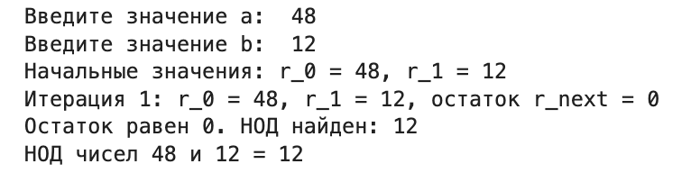
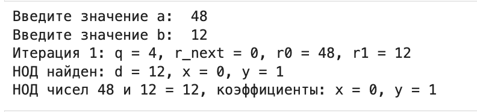
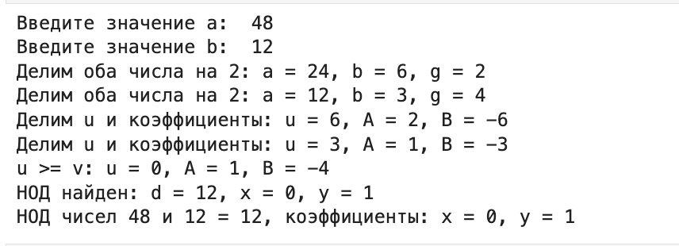
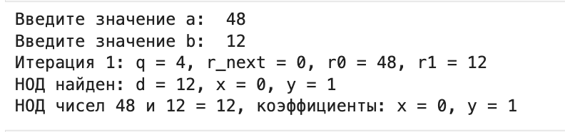
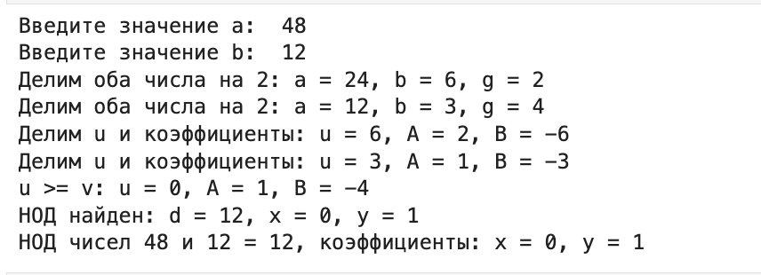

mainfont: PT Serif
romanfont: PT Serif
sansfont: PT Sans
monofont: PT Mono
toc: false
slide_level: 2
theme: metropolis
header-includes:
- \metroset{progressbar=frametitle,sectionpage=progressbar,numbering=fraction}
- '\makeatletter'
- '\beamer@ignorenonframefalse'
- '\makeatother'
aspectratio: 43
section-titles: true
Цели и задачи
Цель лабораторной работы
Изучение алгоритма Евклида нахождения Наибольший общий делитель и его вариаций.
Выполнение лабораторной работы
Наибольший общий делитель
Наибольший общий делитель (НОД) – это наибольшее целое число, на которое два или более целых числа можно поделить без остатка. Например, НОД чисел 12 и 18 равен 6, потому что 6 является наибольшим числом, которое делит оба этих числа на целое.
Алгоритм Евклида
Вход. Целые числа $a, b; 0 < b < a$.
Выход. $d =$ НОД$(a,b)$.
- шаг 1. Положить $r_0 = a$, $r_1 = b$, $i = 1$.
- шаг 2. Найти остаток $r_i+1$ от деления $r_i–1$ на $r_i$.
- шаг 3. Если $r_i+1 = 0$, то положить $d = r_i$. В противном случае положить $i = i+1$ и вернуться на шаг 2.
- шаг 4. Результат: $d$.
Бинарный алгоритм Евклида
- Вход. Целые числа $a, b; 0 < b ≤ a$.
- Выход. $d =$ HOД$(a,b)$.
- Положить $g = 1$.
- Пока оба числа $a$ и $b$ четные, выполнять $a = a/2, b = b/2, g = 2g$ до получения хотя бы одного нечетного значения $a$ или $b$.
- Положить $u = a, v = b$.
- Пока $u \neq 0$, выполнять следующие действия.
- Пока $u$ четное, полагать $u = u/2$.
- Пока $v$ четное, полагать $v = v/2$.
- При $u \geq v$ положить $u = u - v$. В противном случае положить $v = v – u$.
- Положить $d = gv$.
- Результат: $d$
Расширенный алгоритм Евклида
- Вход. Целые числа $a, b; 0 < b ≤ a$.
- Выход: $d =$ НОД$(a, b)$; такие целые числа $x, y$, что $ax + by = d$.
- Положить $r_0 = a, r_1 = b, x_0 = 1, x_1 = 0, y_0 = 0, y_1 = 1, i = 1$
- Разделить с остатком $r_i–1$ на $r_i$ : $r_(i–1) = q_i*r_i + r_i + 1$
- Если $r_(i+1) = 0$, то положить $d = r_i$, $x = x_i$, $y = y_i$. В противном случае положить $x_(i+1) = (x_(i–1) – q_ix_i$, $y_(i+1) = y_(i–1) – q_iy_i$, $i = i + 1$ и вернуться на шаг 2.
- Результат: $d, x, y$.
Пример работы алгоритма

 



Выводы
Результаты выполнения лабораторной работы
Изучилa алгоритм Евклида нахождения Наибольший общий делитель.